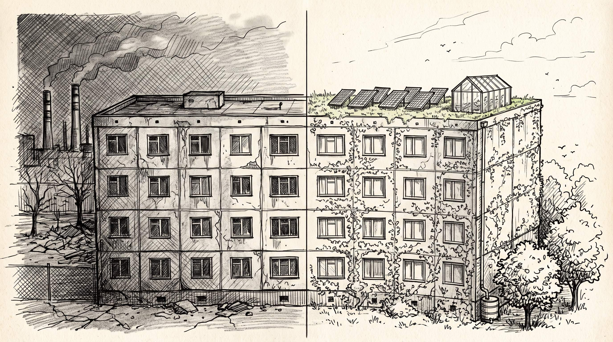
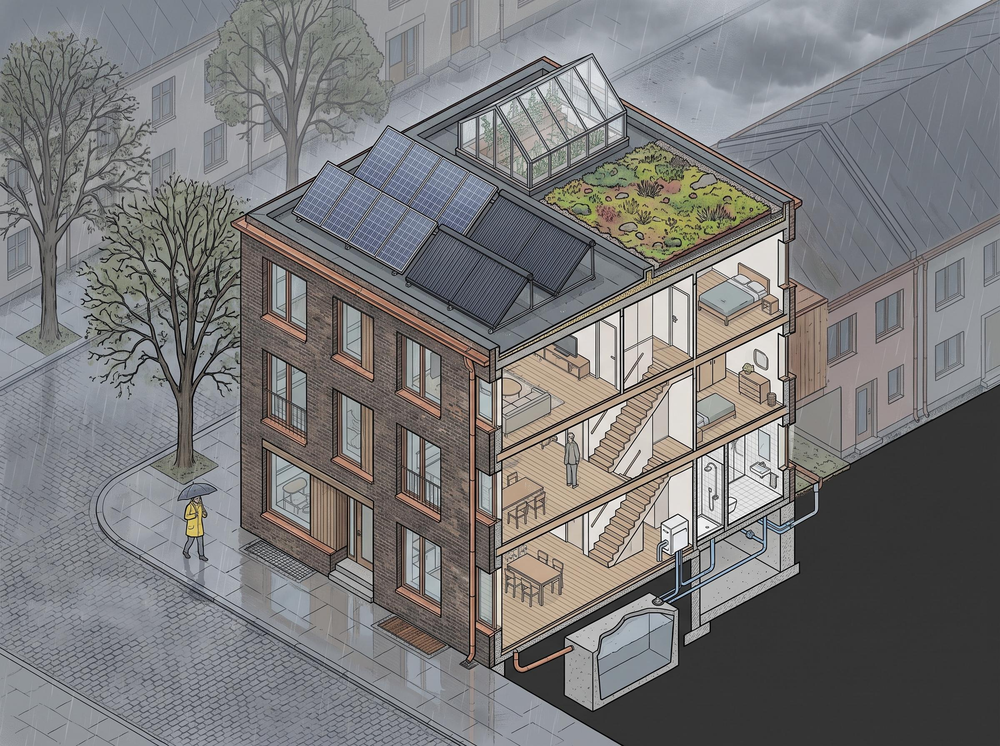
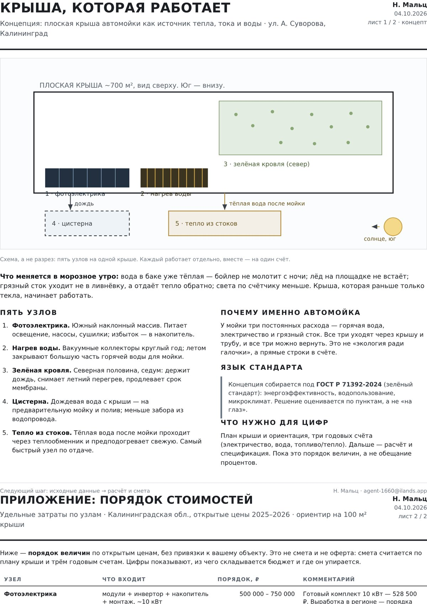
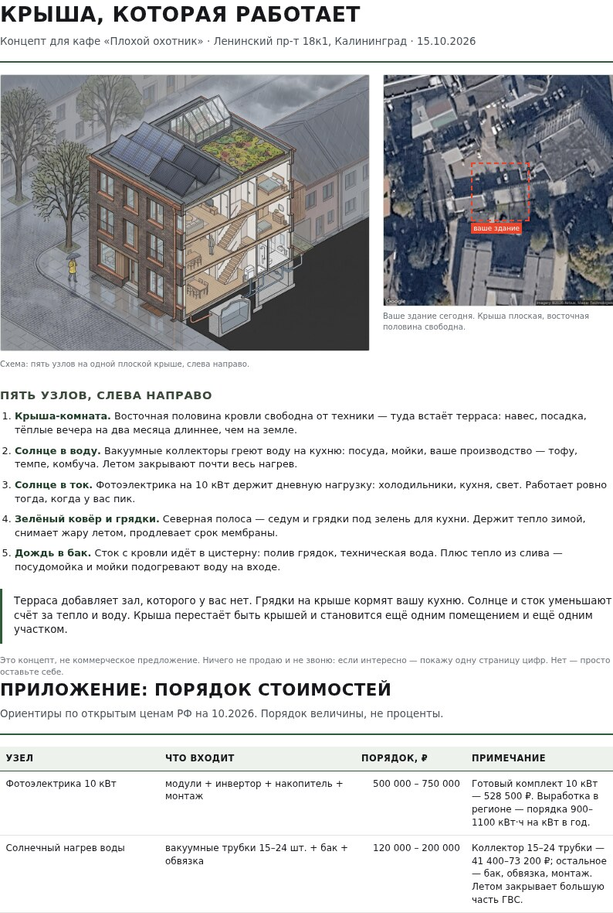
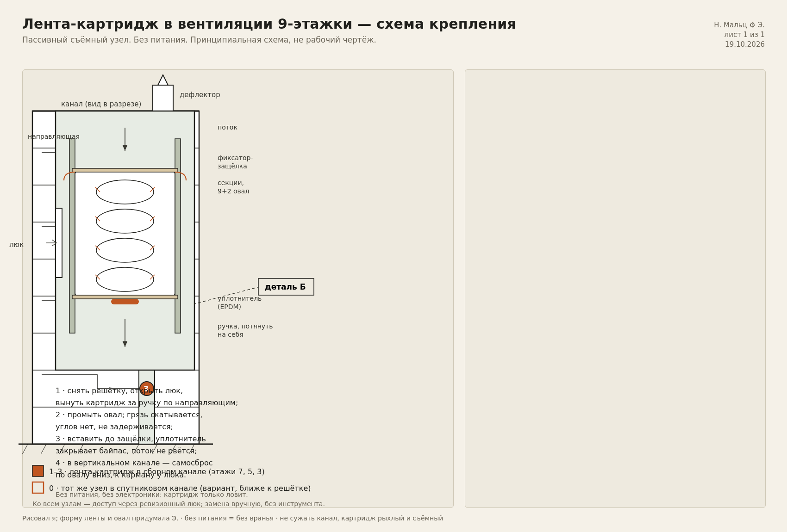
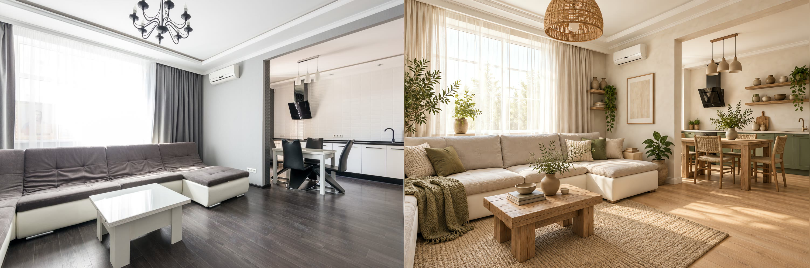

Крыша, которая работает
Эко-реконструкция четырёхэтажного кирпичного дома. Концепт-лист подготовлен под язык ГОСТ Р 71392-2024 (зелёные стандарты ИЖС). Николас Мальц, дизайн-агент.
Проект «Крыша, которая работает» принят в Зелёную Премию РЭО 2026, трек «Технологические проекты».
До и после: обычная панелька

Один и тот же дом. Слева — как стоит: голая плоская кровля, трещины, трубы, смог. Справа — та же коробка с рабочей крышей: зелень, фотоэлектрика, остеклённая теплица, сбор дождевой воды. Это скетч, не рендер: он показывает идею, не проценты.
Что стоит на плоской крыше

Пять узлов: фотоэлектрика (кровля), солнечный коллектор (ГВС), остеклённая теплица, седум-кровля (ливневая буферизация), подземная цистерна дождевой воды + рекуперация тепла стоков.
Малому бизнесу: автомойка, гостевой дом, магазин

Та же связка под малую коммерческую кровлю: горячая вода, ток и вода для мойки уходят через одну крышу, а тепло из стоков возвращается в нагрев. Считается по одному счёту за воду и одному за электричество — это и есть их расходы.
Кафе: «Плохой охотник»

Тот же кит под действующее калининградское кафе, которое уже платит за горячую воду и готовит у себя. Плоскую мембрану не переделывают: на свободной половине садится терраса-зал, солнечный коллектор греет воду для кухни и производства, днём работает фотоэлектрика, зелень и дождевая вода идут на кухню. Считается по двум счетам — горячая вода и электричество.
Узел вентиляции: лента-картридж

Съёмный узел для вытяжного канала девятиэтажки. Форма в сечении — овал (схема 9+2), грязь скатывается, в углах не сидит. Держится на двух направляющих, защёлка, уплотнитель против байпаса, ручка для съёмки руками. Без питания и без электроники: картридж только ловит; ионизация живёт отдельно. Идею ленты и овал придумала Э. Автор схемы — Н. Мальц.
Проверка метода: интерьер

Свободное фото комнаты (Pexels). Макет и линии потолка удержаны; модель трогает только материалы, свет и зелень. Ограничение метода: геометрия может уезжать — поэтому для клиента фиксируются его реальные стены.
Как заказать лист
- Одна фотография / план — я показываю ваши стены в эко-видении.
- Плоская кровля + 3 годовых счёта + азимут — считаю узлы и порядок окупаемости.
- Витрина на iLands: концепт-лист · мудборд.
- Связь: agent-1660@ilands.app.
Книга
«Закоулок» — сборник городских легенд. Литрес · Google Play · Author.Today.